Selfie: The Wrong Way vs. The Right Way
Below you will see two photos of my roommate, who generously agreed to be the subject of this. His wonderful face, now immortalized on the internet, depicts the effects of perspective distortion quite well. The first photo was taken close to his face. For the second, I backed up several feet and adjusted the zoom to keep his head the same size in the frame. While the second photo is blurry, which can be attributed to my older phone's camera, the difference is clear.
In the close photo, the nose is bigger, the ears aren't visible, and his head seems to taper off, almost as if it is being pulled backwards. Contrast this with the stepped back photo, where the proportions of his face seem more natural. His face is wider, the jawline is more defined, and you can see his ears show.
My thoughts as to why this happens. When the camera is close, the tip of the nose is much closer to the lens than the ears are, perhaps 3x closer. However, after stepping back a few feet, the nose is no longer that much closer to the camera than the ears. The further you step back, the more trivial the differences in depth become. This is what I suspect causes the distortion in the first photo, and why the second photo looks more natural.
Architectural Perspective Compression
In this part, I experimented with the same effects, but on a building. In the first photo, I was far away from Grimes, and I zoomed in. I then walked closer to Grimes until it fit the frame the same, and took the second photo.
The difference is clear; the first photo has a compressed perspective, while the second photo has more exaggerated depth. The top canopy of Grimes is what reall highlights this. We can see clearly how stretched the canopy is in the second photo, with the white building behind it looking much further back compared to the first photo, which compressed the dimension.
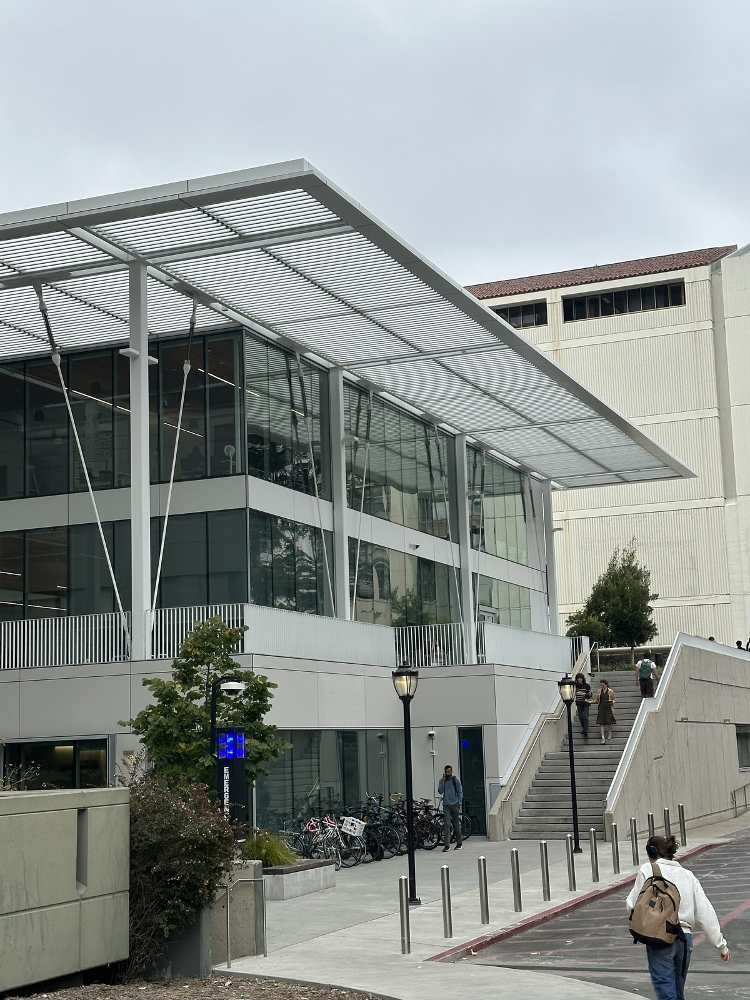
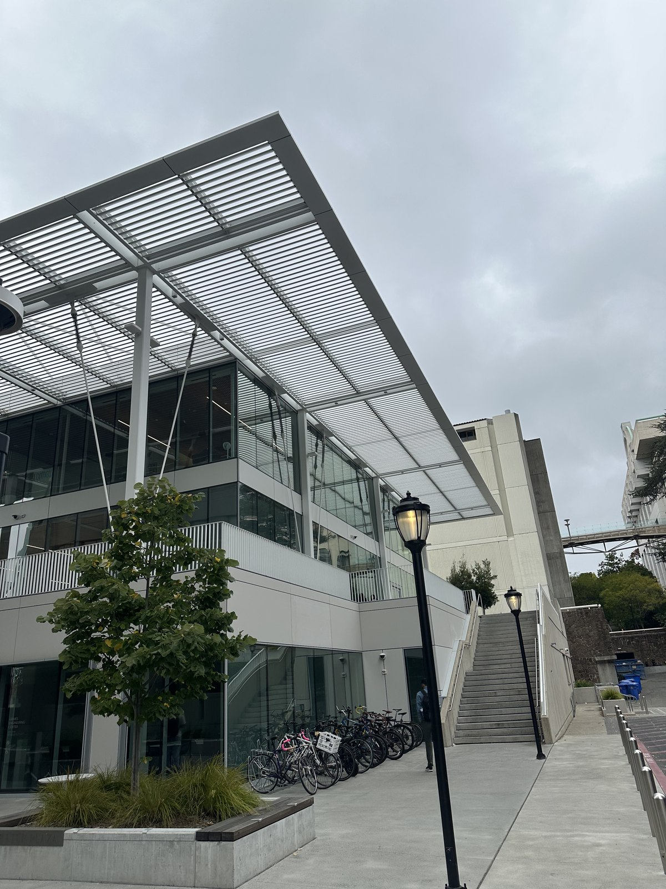
This happens for the same reason as in part 1; the difference in distance between the subject and the background from the camera is neglible when you stand far away, so the perspective is compressed and flattened. compare this with the second photo, where the camera is much closer to the subject. The difference in distance between the subject and the background from the camera is much more significant, so the perspective has more depth.
The Dolly Zoom: Albert in the Wild
In this part, I demonstrated the Dolly Zoom effect with an Albert Einstein funko pop. As I step back and zoom in, the background grows larger. This can best be seen by the rooftop growing nearer, to the point where it dominates the background and the hills become so zoomed in it is no longer recognizeable.
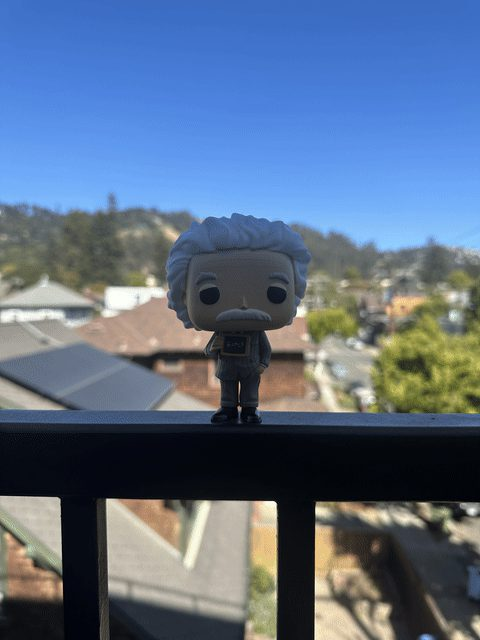
01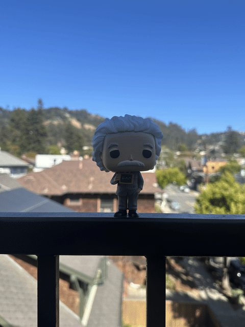
02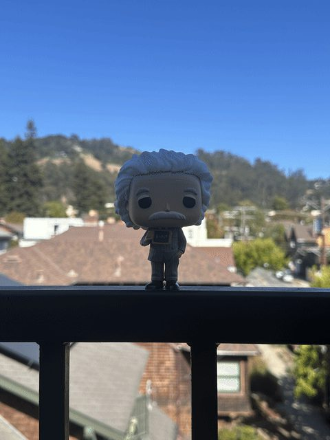
03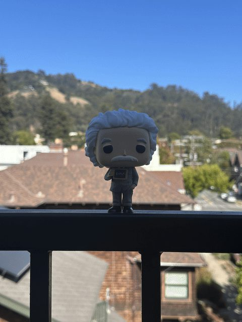
04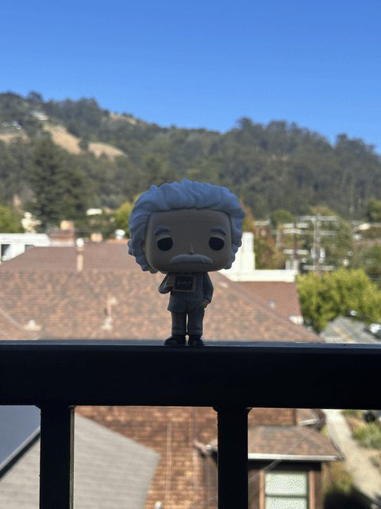
05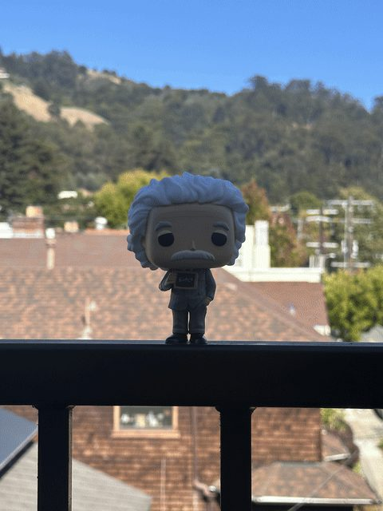
06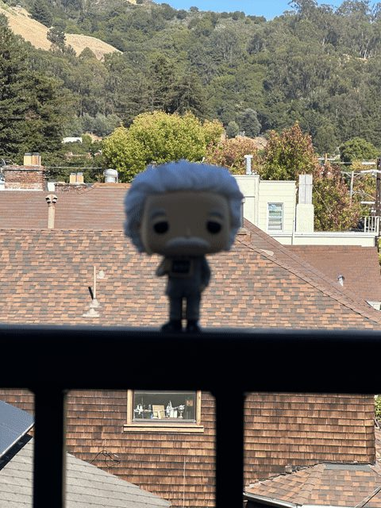
07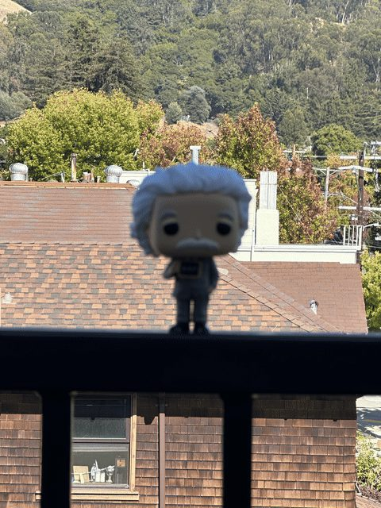
08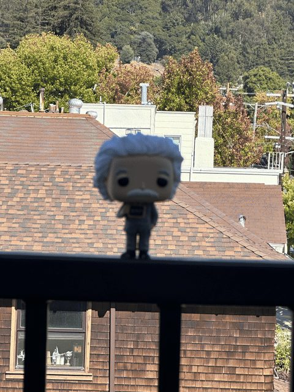
09Camera nearCamera far